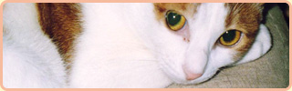

★우리 집 야옹이
우리 집 아이들, 고양이들을 소개하겠습니다!
우리 집 야옹이 소개
●스바루(흰색에 호랑무늬,남자)
눈과 귀가 크고 멋진 미남. 우는 소리조차 귀엽다. 어린시절을 원룸에서 보낸 탓인지 다른 고양이에게 관심이 없는편이다. 성격은 지극히 자기중심적. 골판지상자 모서리나 기둥에 발톱 갈기를 좋아한다.

- 특징 :
- 쉰목소리.데굴 데굴구르며 공격
- 성격 :
- 애교가 많다. 엉큼함
●그래코(잿빛 털,여자)
갓 태어났을 때는 아메리칸 쇼트헤어 같았는데 크면서 점점 잿빛 고양이로 바뀌었다. 긴 털을 가진 품종의 혈통이 좀 섞였는지 털이 부드럽고 푹신푹신하게 부풀어 있어 가족들이 털복숭이라 부르고 있다. 쉰 목소리와 관록 있는 생김새로부터는 상상할 수 없을 정도로 애교를 잘 부리고 처음 보는 사람에게도 낮을 가리지 않고 스스럼 없이 다가오기 때문에 손님들이 굉장히 귀여워한다.

- 특징 :
- 커다란 눈과 귀. 말린꼬리
- 성격 :
- 자기중심적.
●네즈코(흰색과 갈색 무늬, 여자)
그레코와 함께 우리집에 온 흰색 빛이 도는 어린 고양이. 그레코와는 달리 전형적인 고양이 성격. 호의적인 태도보다는 오히려 적대적인 태도를 보일 때가 많다(눈물). 그레코와 벌인 세력쟁탈전에서 패배한 후 집을 나가 지금은 거의 들고양이 신세가 되었다. 생김새는 원래 순 토종 풍으로 깨끗했었는데 밖에서 살던 중에 까마귀의 공격을 받아 한쪽 눈을 잃었다. 고고한 고양이.
- 특징 :
- 한쪽눈.작은 얼굴.
- 성격 :
- 자존심이 강하다. 사람에게는 여왕처럼 군다.
기르는 주인 소개
- H.N. :
- roka404
- 하는 일 :
- 프리랜서로 웹 관련 일을 하고 있다.
- info@hogehoge.com
- web :
- www.hogehoge.com
고양이 사진 모집
갤러리 페이지를 기획중입니다. 여러분의 소중한 고양이를 소개해보세요♪ 고양이 열마리가 모이면 페이지를 개설하겟습니다.
Copyright © UCHI NO NYAN'S ALL Rights Reserved.